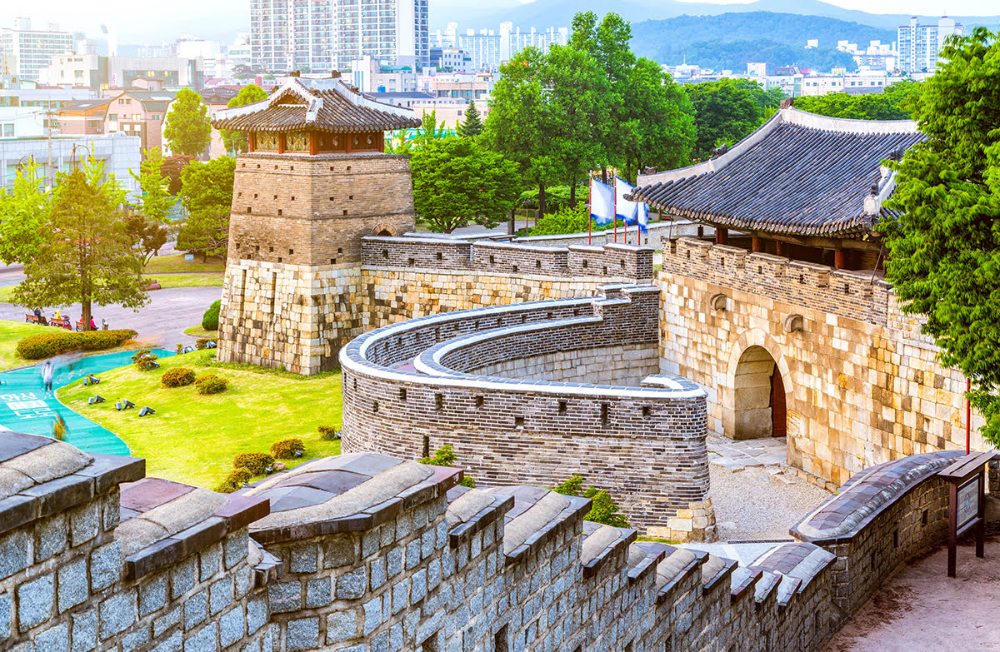
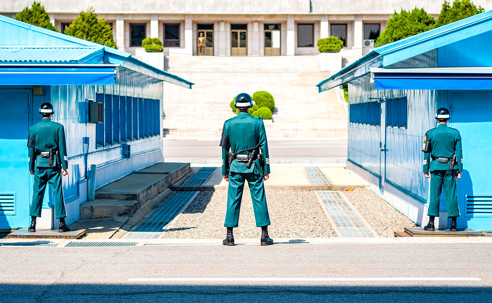

국내 여행지
LOGIN
|
MYPAGE
|
CART
|
HELP
Yongin, 용인
- 많은 놀거리와 다양한 먹거리!
- 테마파크와 전통민속촌을 한 번에!
- 조선시대의 중심!

Suwon , 수원 화성
- 1997년 유네스코 세계문화유산이 있는 곳!
- 과거로 떠나는 시간 여행!
- 다양한 문화 유산!
Bukhan-mountain, 북한산
- 자연을 만끽하며 즐기는 등산!
- 서울 도심 속의 자연을 만끽할 수 있는 곳!
- 사계절 내내 매력있는 북한산!

DMZ, 한반도 비무장 지대
- 꼭 한 번쯤은 가보아야 할 의미 있는 장소!
- 가이드 투어 제공!
Chuncheon, 춘천
- 아름다운 청평호, 그리고 짜릿한 스포츠!
- 멋진 풍경!
- 나무로 빼곡한 숲속에서의 상쾌한 공기!
Pocheon, 포천
- 예술과 자연이 한자리에! 포천 아트밸리
- 자연경관과 어우러진 조형물!
- 연간 20만 명이 방문하는 명소!